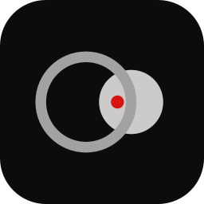
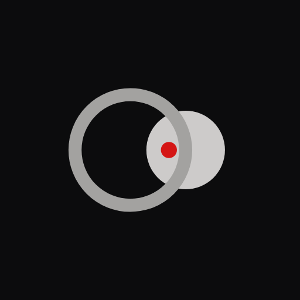
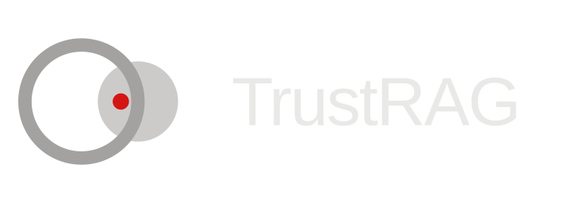
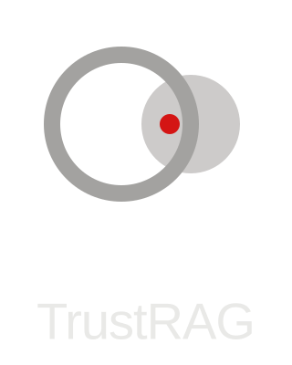

TrustRAG · brand mark
The claim is a solid Chrome Silver disc; the corpus is a Chrome Silver ring. Exactly half the claim is grounded inside the evidence, and the single Laser Crimson point sits at the centre of that supported half — support is the overlap; everything outside it is unsupported.





Clear space. Keep a margin equal to the crimson verdict point's diameter (22 units) on every side.
Minimum size. Mark 20 px; app-tile / favicon 16 px. Below 20 px use the tile, never the bare mark.
Colour. Solid disc #cdcbcA, corpus ring #a3a2a0, one #d41514 verdict point. Nothing else carries colour.
Backgrounds. Obsidian #080808 and graphite surfaces only. On light grounds use the black or mono variant.
Never. Rotate, tilt, outline, add gradients/glows/shadows, recolour the disc or ring, move the crimson point.
Type. Wordmark uses the system sans stack, weight 500, tracking −0.02em. Outline before embedding elsewhere.
Masters and variants: brand/trustrag-symbol.svg, brand/kit/,
brand/lockup-horizontal.svg, brand/lockup-stacked.svg.
The in-app mark lives in apps/web/src/components/common/TrustRagLogo.jsx.